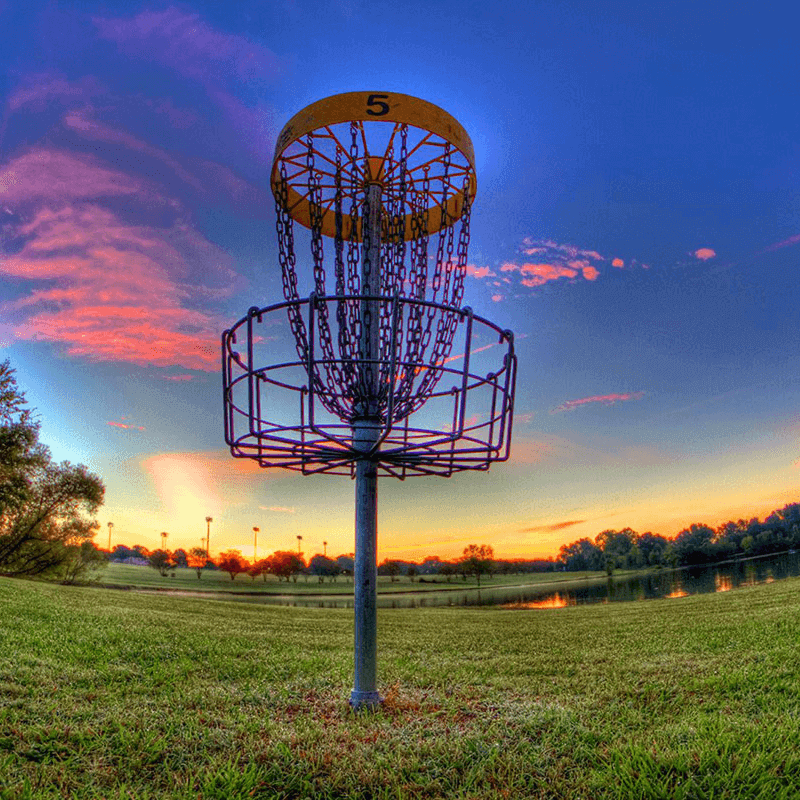
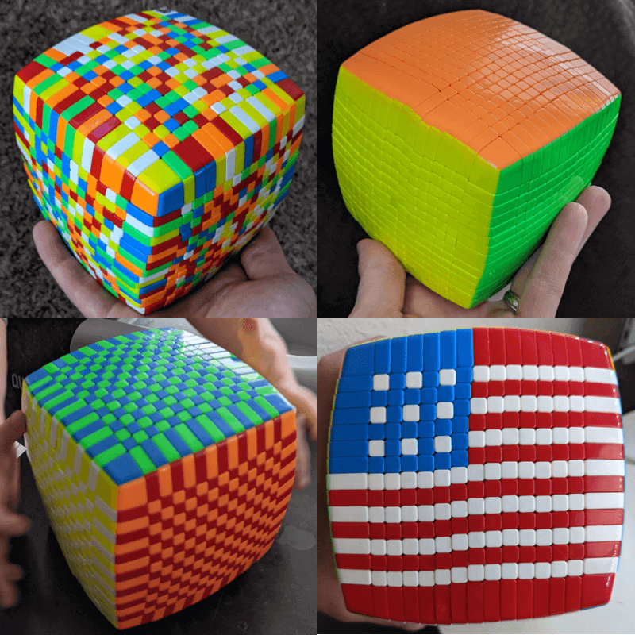
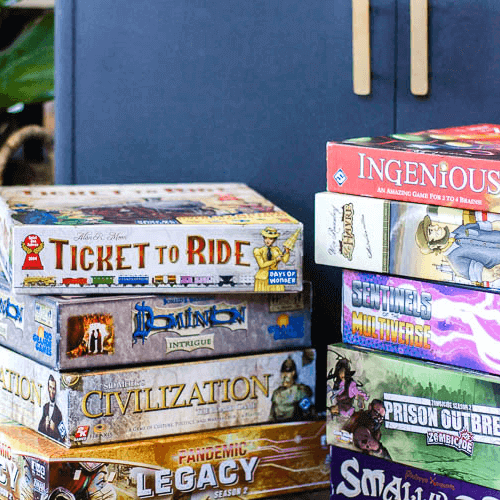
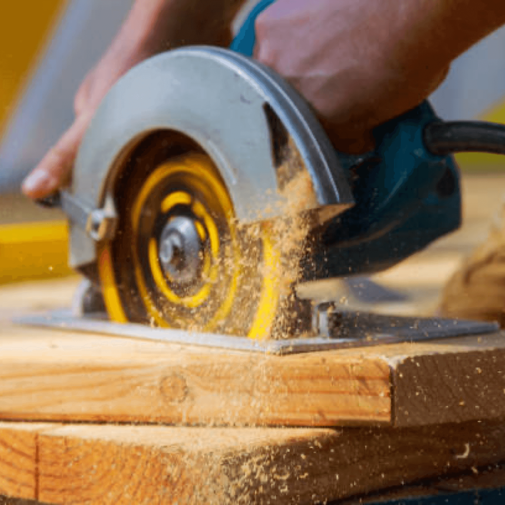

I've always enjoyed learning new things and trying to acquire new skills. Here are a few towards the top of my list.
|  |
Disc Golf
- My brothers invited me to play
- I fell in love
- I'm still no good
- But it is SO enjoyable!
|
|  |
Rubik's Cubes
- It started when I was in high school, seeing someone else with a Rubik's Cube
- I purchased one and spent the entire weekend trying to figure it out and reading instructions to do it
- After I finished the 3x3, I wanted more
- I keep on getting bigger cubes, and other puzzles and I love it!
|
|  |
Board Games
- I always enjoyed playing board games growing up, but I never really got exposed to very many different board games.
- Shortly after my wife and I got married, we met some friends that introduced us to a lot of amazing games
- Little did we know, this would change our lives FOREVER
- Now, our go-to activity together after the kids go to bed, and when we have guests over, is to play board games.
|
|
Music
- My mother started teaching me piano when I was a young boy.
- I really started to play a lot when I was a young teenager.
- I also began to learn many other instruments. It became a great source of peace and enjoyment in my life.
- Now, I get to play and sing music for my kids and watch them start to want to learn music too.
|
|  |
Woodworking
- Out of necessity comes awesome skills. :)
- Shortly after we got married, my wife got me a small circular saw for my birthday
- I quickly learned that I could create amazing things.
- Now, I love to build anything from nightstands to toy boxes to bed frames.
|